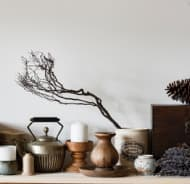

<section class="projects" id="projects">
  <div class="container projects__container">
    <h2 class="section-title projects__title title-reset">Наши проекты</h2>
    <ul class="projects__list list-reset grid">
      <li class="projects__item projects__item_small projects__item1 flex">
        <picture>
          <source srcset="../img/projects1320.avif" type="image/avif" media="(max-width: 576px)">
          <source srcset="../img/projects1320.webp" type="image/webp" media="(max-width: 576px)" >
          <source srcset="../img/projects1320.jpg" media="(max-width: 576px)">

          <source srcset="../img/projects1768.avif" type="image/avif" media="(max-width: 768px)">
          <source srcset="../img/projects1768.webp" type="image/webp" media="(max-width: 768px)">
          <source srcset="../img/projects1768.jpg" media="(max-width: 768px)">

          <source srcset="../img/projects11024.avif" type="image/avif" media="(max-width: 1024px)">
          <source srcset="../img/projects11024.webp" type="image/webp" media="(max-width: 1024px)">
          <source srcset="../img/projects11024.jpg" media="(max-width: 1024px)">

          <source srcset="../img/projects1.avif" type="image/avif">
          <source srcset="../img/projects1.webp" type="image/webp">
          
        </picture>
        <div class="projects__info grid">
          <p class="projects__text text-reset">Синтетически, смешаны с не уникальными данными до степени…</p>
          <p class="date projects__date text-reset flex">
            <svg class="date__svg">
              <use xlink:href="img/sprite.svg#calendar"></use>
            </svg>
            16 июня
          </p>
        </div>
        <p class="label projects__label text-reset">#пейзаж</p>
      </li>
      <li class="projects__item projects__item_small projects__item2 flex">
        <picture>
          <source srcset="../img/projects2320.avif" type="image/avif" media="(max-width: 576px)">
          <source srcset="../img/projects2320.webp" type="image/webp" media="(max-width: 576px)" >
          <source srcset="../img/projects2320.jpg" media="(max-width: 576px)">

          <source srcset="../img/projects2768.avif" type="image/avif" media="(max-width: 768px)">
          <source srcset="../img/projects2768.webp" type="image/webp" media="(max-width: 768px)">
          <source srcset="../img/projects2768.jpg" media="(max-width: 768px)">

          <source srcset="../img/projects21024.avif" type="image/avif" media="(max-width: 1024px)">
          <source srcset="../img/projects21024.webp" type="image/webp" media="(max-width: 1024px)">
          <source srcset="../img/projects21024.jpg" media="(max-width: 1024px)">

          <source srcset="../img/projects2.avif" type="image/avif">
          <source srcset="../img/projects2.webp" type="image/webp">
          
        </picture>
        <div class="projects__info grid">
          <p class="projects__text text-reset">В своём стремлении улучшить опыт мы упускаем, что явные...</p>
          <p class="date projects__date text-reset flex">
            <svg class="date__svg">
              <use xlink:href="img/sprite.svg#calendar"></use>
            </svg>
            28 мая
          </p>
        </div>
        <p class="label projects__label text-reset">#портрет</p>
      </li>
      <li class="projects__item projects__item_small projects__item3 flex">
        <picture>
          <source srcset="../img/projects3320.avif" type="image/avif" media="(max-width: 576px)">
          <source srcset="../img/projects3320.webp" type="image/webp" media="(max-width: 576px)" >
          <source srcset="../img/projects3320.jpg" media="(max-width: 576px)">

          <source srcset="../img/projects3768.avif" type="image/avif" media="(max-width: 768px)">
          <source srcset="../img/projects3768.webp" type="image/webp" media="(max-width: 768px)">
          <source srcset="../img/projects3768.jpg" media="(max-width: 768px)">

          <source srcset="../img/projects31024.avif" type="image/avif" media="(max-width: 1024px)">
          <source srcset="../img/projects31024.webp" type="image/webp" media="(max-width: 1024px)">
          <source srcset="../img/projects31024.jpg" media="(max-width: 1024px)">

          <source srcset="../img/projects3.avif" type="image/avif">
          <source srcset="../img/projects3.webp" type="image/webp">
          
        </picture>
        <div class="projects__info grid">
          <p class="projects__text text-reset">Равным образом, высокое качество позиционных высокотехнологичная концепция общественного уклада</p>
          <p class="date projects__date text-reset flex">
            <svg class="date__svg">
              <use xlink:href="img/sprite.svg#calendar"></use>
            </svg>
            14 мая
          </p>
        </div>
        <p class="label projects__label text-reset">#предмет</p>
      </li>
      <li class="projects__item projects__item_big projects__item_fuji projects__item4 grid">
        <p class="label projects__label text-reset">#fuji</p>
        <div class="projects__wrapper">
          <p class="date projects__date projects__date_white text-reset flex">
            <svg class="date__svg">
              <use xlink:href="img/sprite.svg#calendar"></use>
            </svg>
            9 апреля
          </p>
          <h3 class="projects__subtitle title-reset">Cемантический разбор</h3>
          <p class="projects__text text-reset projects__text_font">В рамках спецификации современных стандартов,
            интерактивные прототипы</p>
        </div>
        <button class="secondary-btn projects__btn btn-reset">О проекте</button>
      </li>
      <li class="projects__item projects__item_big projects__item_oblivion projects__item5 grid">
        <p class="label projects__label text-reset">#проектзабвение</p>
        <div class="projects__wrapper">
          <p class="date projects__date projects__date_white text-reset flex">
            <svg class="date__svg">
              <use xlink:href="img/sprite.svg#calendar"></use>
            </svg> 20 марта
          </p>
          <h3 class="projects__subtitle title-reset">Забвение</h3>
          <p class="projects__text text-reset projects__text_font">Играет важную роль в формировании глубокомысленных
            рассуждений</p>
        </div>
        <button class="secondary-btn projects__btn btn-reset">О проекте</button>
      </li>
      <li class="projects__item projects__item_middle projects__item6 flex">
        <picture>
          <source srcset="../img/projects1_w320.avif" type="image/avif" media="(max-width: 576px)">
          <source srcset="../img/projects1_w320.webp" type="image/webp" media="(max-width: 576px)" >
          <source srcset="../img/projects1_w320.jpg" media="(max-width: 576px)">

          <source srcset="../img/projects1_w768.avif" type="image/avif" media="(max-width: 768px)">
          <source srcset="../img/projects1_w768.webp" type="image/webp" media="(max-width: 768px)">
          <source srcset="../img/projects1_w768.jpg" media="(max-width: 768px)">

          <source srcset="../img/projects1_w1024.avif" type="image/avif" media="(max-width: 1024px)">
          <source srcset="../img/projects1_w1024.webp" type="image/webp" media="(max-width: 1024px)">
          <source srcset="../img/projects1_w1024.jpg" media="(max-width: 1024px)">

          <source srcset="../img/projects1_w.avif" type="image/avif">
          <source srcset="../img/projects1_w.webp" type="image/webp">
          
        </picture>
        <div class="projects__info grid">
          <p class="projects__text text-reset">Как принято считать, многие известные личности и по сей день остаются уделом либералов…</p>
          <p class="date projects__date text-reset flex">
            <svg class="date__svg">
              <use xlink:href="img/sprite.svg#calendar"></use>
            </svg>
            9 марта
          </p>
        </div>
        <p class="label projects__label text-reset">#ретушь</p>
      </li>
      <li class="projects__item projects__item_middle projects__item7 flex">
        <picture>
          <source srcset="../img/projects2_w320.avif" type="image/avif" media="(max-width: 576px)">
          <source srcset="../img/projects2_w320.webp" type="image/webp" media="(max-width: 576px)" >
          <source srcset="../img/projects2_w320.jpg" media="(max-width: 576px)">

          <source srcset="../img/projects2_w768.avif" type="image/avif" media="(max-width: 768px)">
          <source srcset="../img/projects2_w768.webp" type="image/webp" media="(max-width: 768px)">
          <source srcset="../img/projects2_w768.jpg" media="(max-width: 768px)">

          <source srcset="../img/projects2_w1024.avif" type="image/avif" media="(max-width: 1024px)">
          <source srcset="../img/projects2_w1024.webp" type="image/webp" media="(max-width: 1024px)">
          <source srcset="../img/projects2_w1024.jpg" media="(max-width: 1024px)">

          <source srcset="../img/projects2_w.avif" type="image/avif">
          <source srcset="../img/projects2_w.webp" type="image/webp">
          
        </picture>
        <div class="projects__info grid">
          <p class="projects__text text-reset">С учётом сложившейся международной обстановки, новая модель
            организационной…
          </p>
          <p class="date projects__date text-reset flex">
            <svg class="date__svg">
              <use xlink:href="img/sprite.svg#calendar"></use>
            </svg>
            1 марта
          </p>
        </div>
        <p class="label projects__label text-reset">#портрет</p>
      </li>
    </ul>
  </div>
</section>
